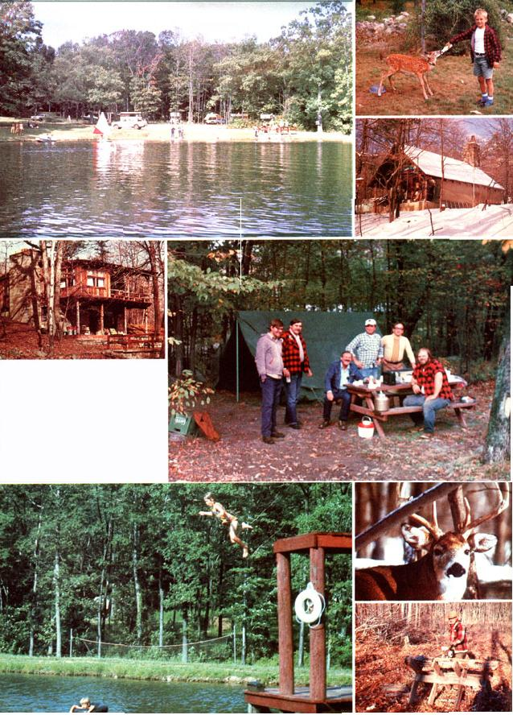

If you have a little acreage-or plan to get some - this idea could be your key to makin' cash in the country!
Sixteen years ago, Joe Taylor, his wife Amy, and their four sons opened up their land to a few campers. Today, Camp Taylor has 84 campsites . . . and the family has a thriving home business!
Since I've lived on his "homestead camp" for the last eight years, I've had plenty of chances to talk with Mr. Taylor about the ins and outs of launching such a project. And Joe tells me that you can start as small as you wish (as he did - for instance - with just a few picnic tables, garbage pails, and an outhouse) and then let your campground grow until it's as big as you can manage.
HOW IT HAPPENED
In 1953 - when Joe bought his 137 acres of northwestern New Jersey woods - he had no intention of starting a campground. He just wanted some recreational acreage for his family and friends. But as taxes (inevitably) increased, the new landowner had to make his property pay ... or lose it.
At first, the Taylors leased their land during hunting season, and took in about $400, but that wasn't nearly enough. So, Joe's next thought was to build a bungalow colony, but he ran into trouble with local building codes (which required a minimum of 1,250 square feet f or any dwelling) and decided that such a project wouldn't pay off.
It was at that point that the landowner chopped down enough trees to make space for a few campsites, built several picnic tables, provided garbage cans, constructed a two-holer outhouse . . . and opened his campground.
In order to make the place more attractive to his guests, Joe Taylor's next move was to create a lake. Although he had a full-time job and was moonlighting at another besides, this determined man cleared all the trees for the two-acre lake site with an axe!
FIRST, THE HEADACHES
Originally the pond was stocked and fishing was permitted . . . but the Taylors soon discovered that many of their younger campers carried bait in glass jars, which led to broken glass and cut feet. Joe learned that - if he were to continue granting fishing privilege - she'd have to add an expensive rider to his insurance policy, too. Therefore, fishing is no longer allowed at the camp, although it's available in many nearby lakes and streams.
Then - in an attempt to bring in some extra money - the Taylors decided to buy several boats and rent them to campers . . . a move which led to more problems! It seems that some youngsters liked to joust in the small craft and break oars ... while other campers complained that the boaters interfered with the swimmers. Now there's only one boat kept on hand, for emergencies.
Sometime later (and still trying to improve his campground) Joe built a hefty dock out of used utility poles and new planks. Its diving boards, however, tended to break . . . and that presented the possibility of broken limbs. The problem was solved with the construction of a 12-foot-high jumping and diving platform, and relative peace prevails on the waterfront . . . though supervision of activities is still necessary to curb roughhousing.
And speaking of rough stuff . . . when any campers get rowdy, they're asked to quiet down. If that fails, Joe gives them an hour to pack up and get out . . . and personally evicts troublemakers whose actions require it.
On one occasion, the Taylors' son Clayton found a camper hacking the bark off a living tree, and gave the offender 20 minutes to leave the camp. When the man squawked for a refund, Clayton told him, "After you've replaced that tree with one of equal size, and it's grown for one year, you' ll get your money back."
RECREATION ATTRACTIONS
If you establish a campground, it'll be up to you to decide what recreational facilities to include. Joe points out that you'll be off to a good start if you're lucky enough to own property near a major tourist attraction such as a waterfall or cave . . . a hunting or ski area . . . or a national or state park. He also says, however, that it's a good idea to have some forms of fun available right at your camp, too!
Besides swimming, Camp Taylor offers swings, horseshoes, and volleyball. Photographers have a field day shooting the camp's small ''zoo": a herd of deer, wild turkeys, Chinese geese, Pekin and mallard ducks, and - at various times - beavers, raccoons, porcupines, peacocks, swans, and Amherst and ringnecked pheasants. (Picturesque Canadian geese also drop in on the lake for a visit from time to time.)
In addition - with 73,000 acres of national park surrounding the Taylors' camp property - hiking is a big attraction. And boating, hunting, fishing, horseback riding, skiing, and snowmobile trails are all just a short drive away.
HOW TO PUBLICIZE
Joe advertises Camp Taylor in every camping guide that he can find (including the one put out by Rand McNally) which will publish listings of campgrounds without charge. (Many states produce campground access books, too.)
To supplement such listings, the Taylors have placed signs on nearby high ways and printed brochures for mail distribution, but Joe still believes word-of-mouth advertising is the best.
"It's mostly the good people who spread the word . . . and they tend to tell other good people," he says.
THE FACILITIES
In the camp's early years, Joe put up two buildings that were originally intended for family use but now serve as rental cabins. The first structure was an A-frame (which I've occupied for the last few years) with one 15' X 20' room and a fireplace. The second building - called the "Big Cabin" - is really a small lodge with a kitchen, bath, and utility room on the first floor, and a large recreation and living room and two bedrooms upstairs. It rents at $150 a week for a maximum of four people.
For a number of years now, a group of bow hunters has leased the Big Cabin and woods at $1,000 for the one-week "primitive weapon" deer season each fall. Another club - of buckshot hunters - has a 10-year lease on the building and woods (also for $1,000) for the regular one-week deer season. (The rates cover meals, heat, furnishings, and linens.)
The camp also features a more recent structure . . . a pavilion made of utility poles with a truss roof and sheet-aluminum roofing. The 60' X 24' pavilion was built from $2,000 worth of materials, plus scrounged poles. All the labor - on all of the buildings - was done by the family.
CAMP MAINTENANCE
If you expand your campground, you'll eventually have to deal with the hassle of road maintenance. In flat and sandy country, this won't be much of a problem . . . but if your land is mostly hilly, you'll more than likely find it handy to have your own gravel pit (or at least a nearby source of road material). Joe has to haul gravel 12 miles in his dump truck to repair roads, following heavy storms and after each winter.
However, if you set up a small camp, you'll find there isn't really all that much labor involved . . . other than disposing of garbage, picking up cigarette butts, and talking with the campers. (You may, of course, wish to offer meals for added income.)
A large campground - on the other hand - means many hours of work, but will let you be your own boss . . . so you can take off a few hours (or even a day) on occasion if you feel like it. Furthermore, the amount of work will depend on the length of the season during which you choose to be open. Many campground owners accept "customers" for six months and then go south for the winter.
Camp Taylor operates year round, however. Says Joe: "We go from the regular camping season - May 15 to October 1 - into two hunting seasons . . . with winter camping and the Big Cabin available, all year, by reservation."
NEW PROJECTS
Camp Taylor is still classified as "primitive" in campground guidebooks because the property has no flush toilets or showers . . . and Joe figures he's lost thousands of dollars' worth of business from campers who want such amenities. However, the Taylors installed on-site electricity and water some time ago, and recently built a dumping station . . . so trailer campers can dispose of their sewage without charge.
As you can imagine, though, such "improvements" don't come inexpensively! Even though Joe and his sons did the excavating and backfilling, the dumping station still cost them $2,500. (For this and other jobs, Joe bought a $3,500 secondhand backhoe which, he says, is the most useful piece of equipment on the place. And in addition to the backhoe and the road-repairing dump truck, Camp Taylor has - over the years - acquired two used tractors, a small bulldozer, a flail mower, a pickup truck, several chain saws, and numerous hand tools.)
The Taylors' next big project will be the erection of a $40,000 building to house the camp office, showers, and flush toilets. When that's done, the camp will no longer be classed as primitive.
THE WATER-SUPPLY
A source of pure drinking water is, of course, a necessity for any campground. For years, Joe depended on a dug well and a spring for the camp's supply, but the two sources were soon unable to meet the needs of the ever-growing number of campers. So - a few years ago - the Taylors drilled a deep well that yields 30 gallons per minute. (The job cost them $8.00 per foot for 128 feet . . . or $1,024. )
Camp Taylor's water is delivered to the campsites and watering places via aboveground plastic pipe . . . with one frostproof hydrant provided for winter guests.
LOCAL ORDINANCES
It's essential - before you open a campground - to find out about the applicable local and state ordinances (many townships won't permit campgrounds at all! ). Remember, too, that regional officials can close you down for infractions of campground laws.
And, since the specter of accidents is always with a campground owner, you must be prepared to cope with such problems through first aid at your camp and access to a rescue squad. You'll also, of course, need insurance to protect yourself against damage claims. (Joe carries one million dollars' worth of insurance coverage.)
You can learn a lot about potential problems if you make a point to visit established campground owners and discuss their experiences. And while you're at it, check out their rates and see just what your competition offers for the money!
WHAT TO CHARGE
The rates at Camp Taylor are currently $5.00 per day for two people . . . and $1.50 extra for each additional adult or 75 cents for each additional child. (An extra fee of $1.00 is charged for campsites with electrical hookups.) In response to customer demand for season rates, Joe has al so established a 5-1/2-month two-person rate of $385 (electricity included, $30 extra for water).
And while the Taylors never exploit their customers to bring in extra income, they do have a few paying enterprises going besides collecting camping fees. For example, they sell firewood at $1.00 a box, with sales this past season of $500. The family has also set up feed dispensers (for folks who want to treat the fish, birds, and deer at 5 cents per handful), and a soda pop machine and jukebox have been installed in the pavilion.
The home business brings in money from noncampers, as well. Picnicking groups - such as churches, family reunions, or fraternal organizations - rent space by the day, and Joe also offers "dead storage" of trailers at a rate of $7.00 a month.
HOW MUCH MONEY?
Weather is the deciding factor, so Joe says, in how much cash a campground owner can make. The Taylors have found that a Friday rain may cut their weekend take down to $30 . . . while a pleasant Friday can lead to a Saturday and Sunday payoff of as much as $350. And the three "Big Weekends" of the season (Memorial Day, Fourth of July, and Labor Day) may gross$ 1,000 each.
Right now, Joe looks forward to the day when he can offer full facilities and even more campsites . . . and when his son Clayton will be in complete charge. (Clayton has acquired a master's degree in business administration, so he'll be well equipped to count the dollars as they roll in.)
I asked Joe, too, if his future plans might include a store to supply campers with food and other items . . . or a hotel to provide full board.
"No," he replied, "we want to keep this business to a size that can be managed by the family. A store or hotel would require hiring outside personnel."
WHY DO IT?
Since Joe is now over 70 years old, I wanted to know why he works so hard. Why, I inquired, didn't he just sell out and retire? In response, Mr. Taylor looked at me as if I'd gone bananas.
"What would I do with myself?" he asked. "This is the only place I can really call home! "
In spite of all the work, Joe finds peace in his daily walks through the woods, and - being an outgoing man - he enjoys his chats with the campers . . . loves to show slides of the wildlife he's photographed . . . and is generally helpful to his customers. This rapport with his clients is a major contribution to the camp's overgrowing popularity.
And the fact that Joe's been offered $300,000 for the place - and declined - gives you some idea of how much Camp Taylor means to him. After all, why should he sell a dream-come-true?
Such a homestead campground could grow into something special for you, too. Sure, it means a chance to earn cash and live in the country . . . but Joe feels that meeting fine people and contributing to their enjoyment of life is worth a lot more than mere money!
|
 CLOCKWISE FROM ABOVE The ""Big Cabin"" is rented out to guests by life, week . . . . Joe Taylor made his own two-acre swimmin' hole . . . . The camp ""zoo"" is an added attraction . . . . This small cottage like all the campground buildings, was constructed by the, Taylor family . . . . Hunters rent out the, property twice each year . . . . Photographers who are interested in wildlife find plenty of subject matter . . . . Firewood means extra income . . . .A platform proved.safer than the diving boards. |
|
|